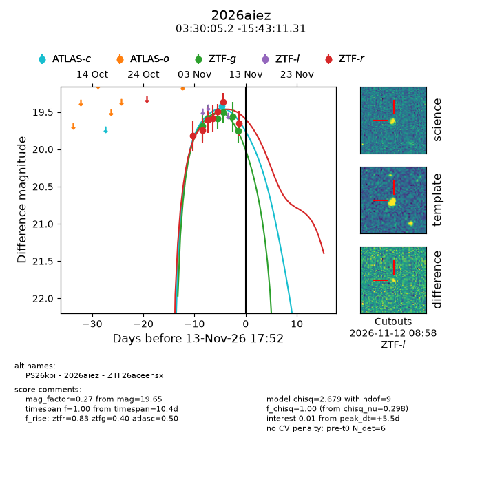
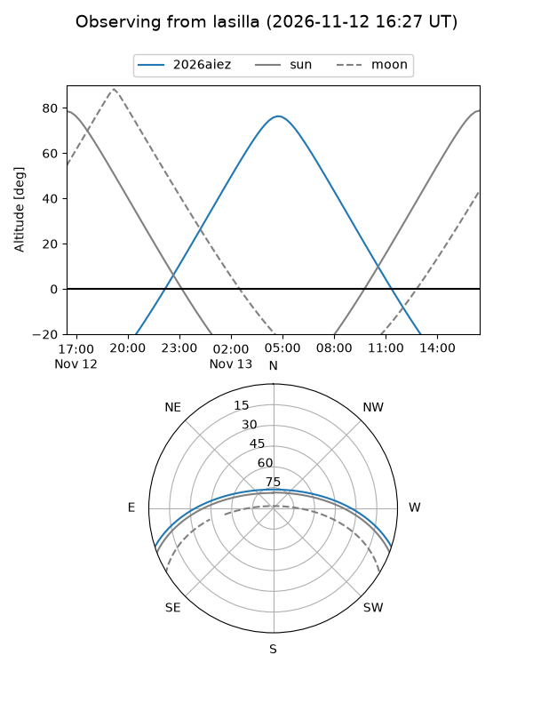
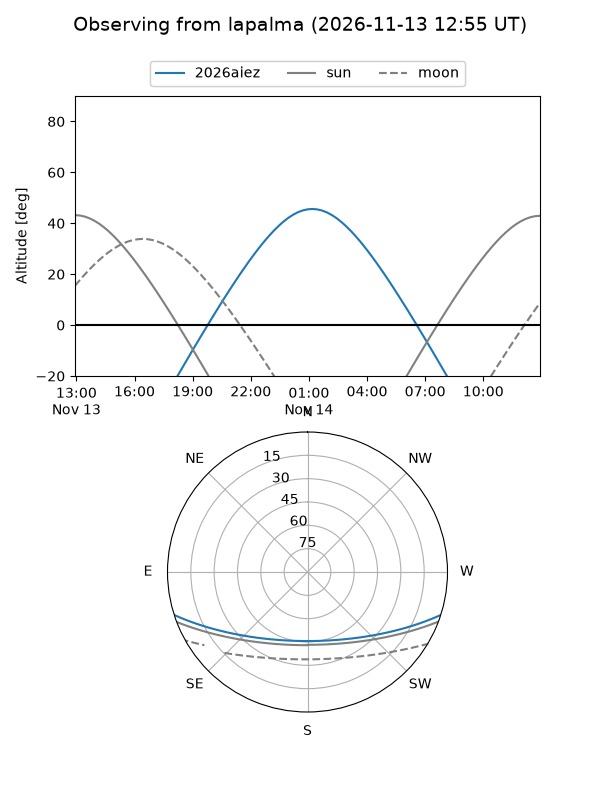
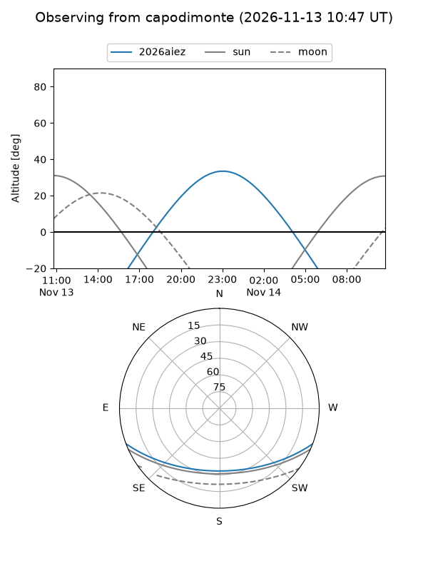
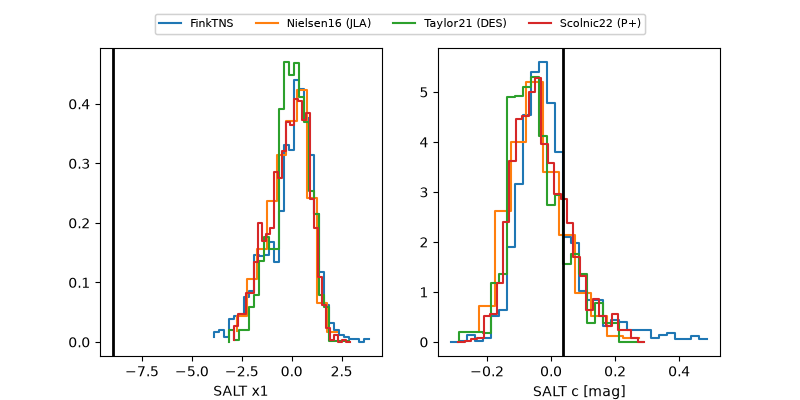

2026aiez
Target 2026aiez at 2026-11-13 17:58
Aliases and brokers:
FINK-ZTF: ztf.fink-portal.org/ZTF26aceehsx
Lasair-ZTF: lasair-ztf.lsst.ac.uk/objects/ZTF26aceehsx
ALeRCE-ZTF: alerce.online/object/ZTF26aceehsx
YSE-PZ: ziggy.ucolick.org/yse/transient_detail/2026aiez
TNS name: wis-tns.org/object/2026aiez
Direct TNS query: direct search
alt names
ZTF26aceehsx (ztf,fink_ztf)
2026aiez (tns,yse)
PS26kpi (panstarrs)
Coordinates:
equatorial (ra, dec) = 52.5215,-15.71981
equatorial (HMS+DMS) = 03:30:05.17,-15:43:11.31
galactic (l, b) = (203.9810,-51.54055)
Flags:
peak dt: +5.5
Photometry:
last atlasc=19.42, ztfg=19.75, ztfr=19.65
1 atlasc, 6 ztfg, 7 ztfr detections
Lightcurve

Visibility



Additional plots
